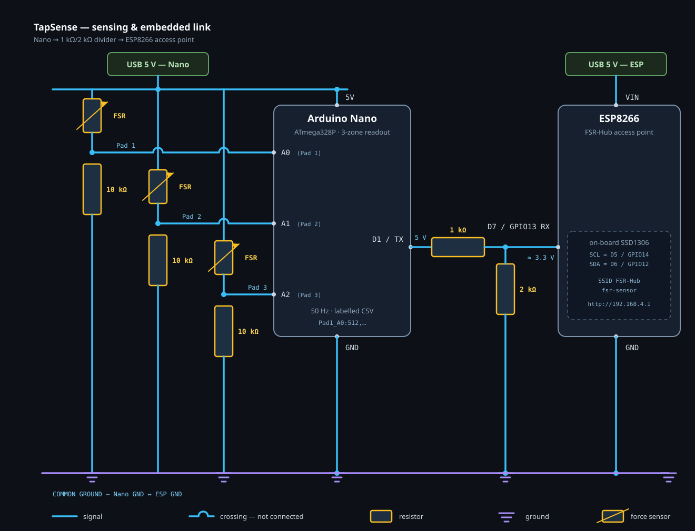

TapSense — system schematic
Generated by tools/gen_schematic.py. Do not edit the SVG by hand —
change the script and regenerate.

Nets
| Net | From | To | Level |
|---|
| Pad1 / Pad2 / Pad3 | FSR divider node | Nano A0 / A1 / A2 | 0–5 V analog |
| NANO_TX | Nano D1 / TX | 1 kΩ → divider node | 5 V logic |
| ESP_RX | divider node | ESP D7 / GPIO13 | ≈3.3 V |
| GND | Nano + ESP | common rail | — |
Wiring notes
- Each FSR sits in a divider:
5 V → FSR → analog pin → 10 kΩ → GND.
- The 1 kΩ / 2 kΩ network is not optional — the Nano drives 5 V, the ESP8266 RX pin is 3.3 V only.
- The ESP8266 TX pin stays disconnected; the serial link is one-way by design.
- Each board has its own USB supply. The grounds must still be tied together.
- The Ideaspark board carries the OLED on
D5 (SCL) and D6 (SDA).
- A wire that hops another is not connected to it.
Disconnect the Nano TX wire while flashing the ESP over USB — GPIO13 sits next to the
programmer path, and the divider fights the programmer.